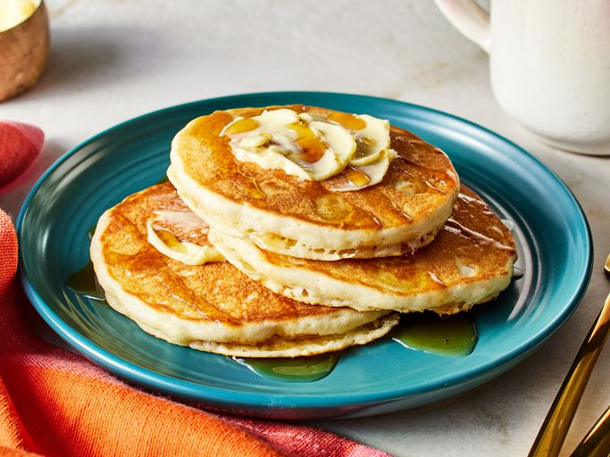

Perfect Pancakes

Description
Simply perfect fluffy pancakes just like your favorite restaurant makes them
Ingredients
- eggs
- milk
- melted butter
- unbleached all-purpose flour
- salt
- granulated sugar
Steps
- Beat the eggs and milk until light and foamy, about 3 minutes at high speed of a stand or hand mixer. Stir in the butter or vegetable oil.
- Whisk the dry ingredients together to evenly distribute the salt, baking powder and sweetener.
- Gently and quickly mix into the egg and milk mixture. Let the batter rest for at least 15 minutes, while the griddle is heating; it'll thicken slightly.
- Heat a heavy frying pan over medium heat, or set an electric griddle to 375°F. Lightly grease frying pan or griddle. The pan or griddle is ready if a drop of water will skitter across the surface, evaporating immediately.
- Drop 1/4 cupfuls of batter onto the lightly greased griddle. For blueberry pancakes, sprinkle the fresh or thawed frozen blueberries over the batter. (Mixing frozen blueberries into the batter before scooping will turn it blue and streaky.)
- Bake on one side until bubbles begin to form and break, about 2 minutes; then turn the pancakes and cook the other side until brown, about 1 1/2 to 2 minutes. Turn over only once. Serve immediately.